YurLaps — Quick Race (aplikasi nyata, full offline)
Tangkapan layar dari aplikasi yang berjalan, bukan mockup. Data club dibaca dari SQLite lewat API lokal.
14 langkah uji lulus
0 galat JS
0 kunci localStorage
0 permintaan ke internet
13 tangkapan layar
1440 × 940
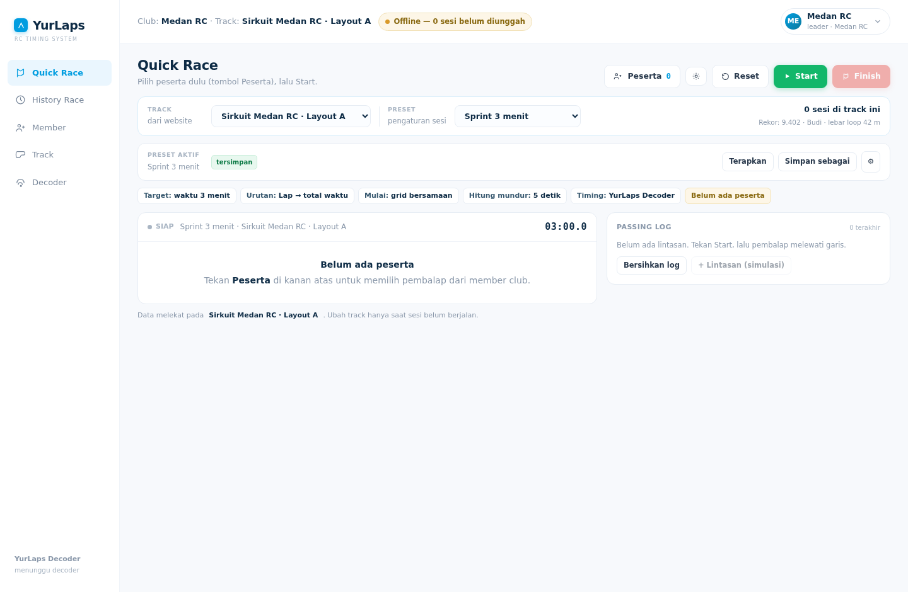
01Siap
Belum ada peserta. Track aktif dari club, rekor track, dan pengaturan sesi terlihat di atas.
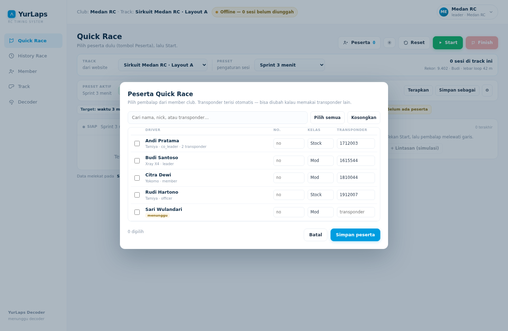
02Peserta
Dipilih dari member club; transponder terisi otomatis. Member pending diberi penanda.
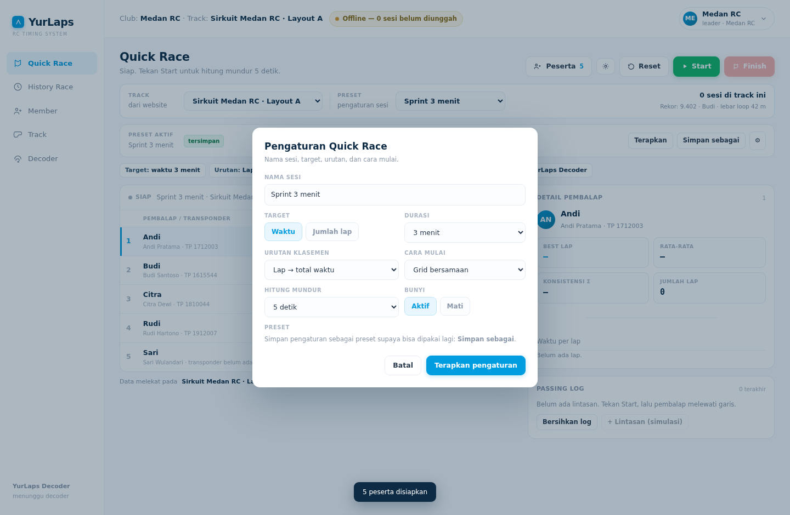
03Pengaturan (⚙)
Nama sesi, target waktu/lap, urutan klasemen, cara mulai, hitung mundur, bunyi.
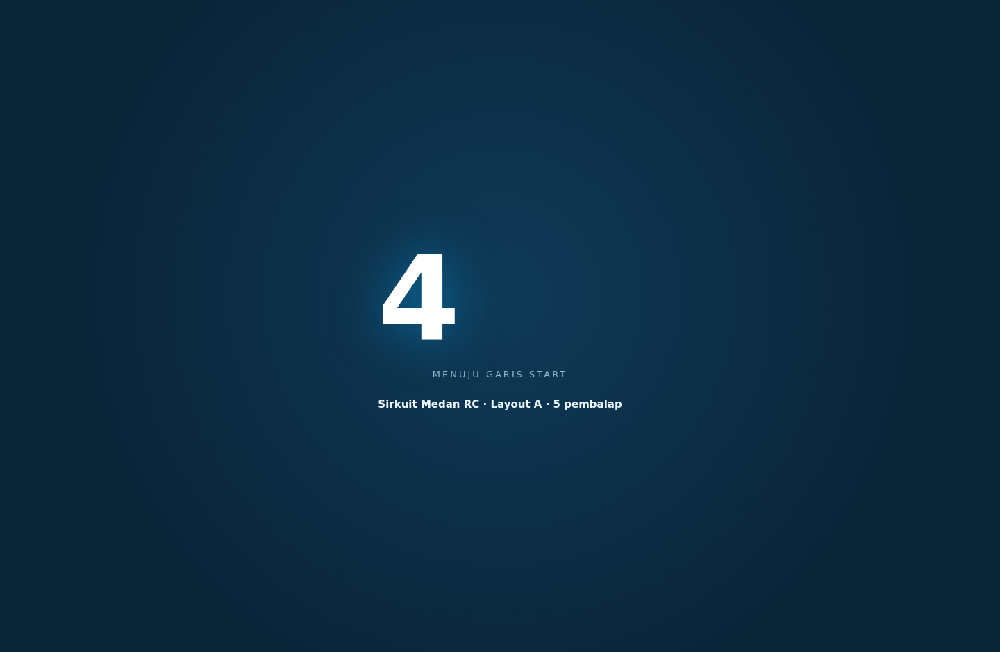
04Hitung mundur
Angka besar di layar penuh, diakhiri GO, lalu sesi berjalan otomatis.
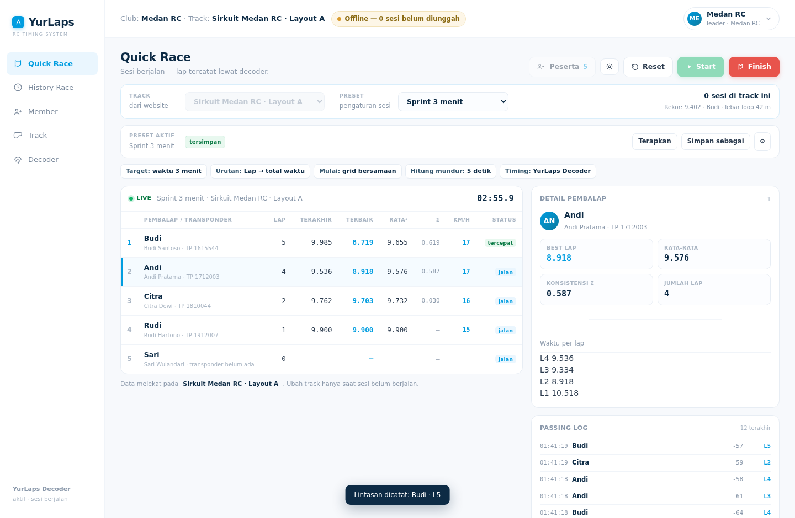
05Live
Lap tercatat, km/h dihitung dari lebar loop ÷ waktu lap, panel detail pembalap terpilih.
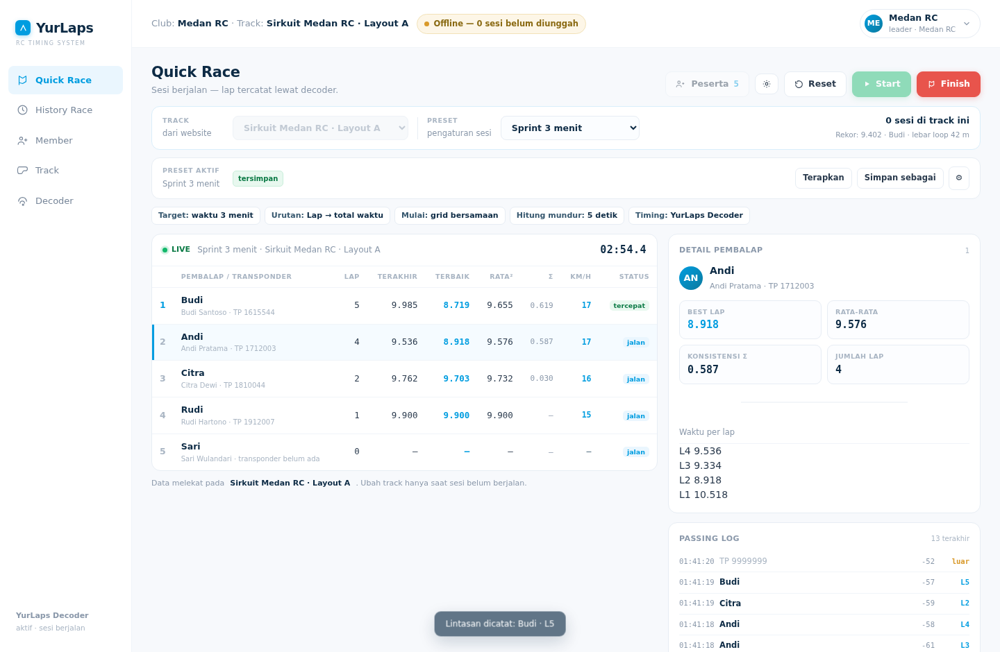
06Passing log — transponder luar
Lintasan dari transponder yang bukan peserta tetap dicatat, ditandai luar, tidak masuk klasemen.
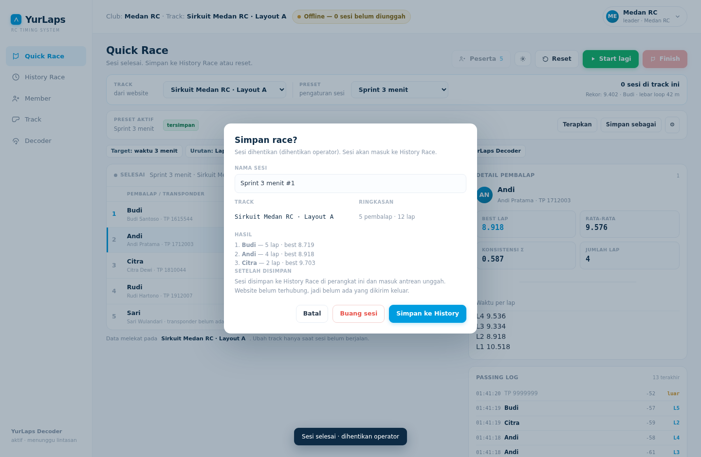
07Finish → simpan
Nama sesi otomatis, ringkasan 3 teratas, dan penjelasan jujur bahwa belum ada pengiriman ke website.
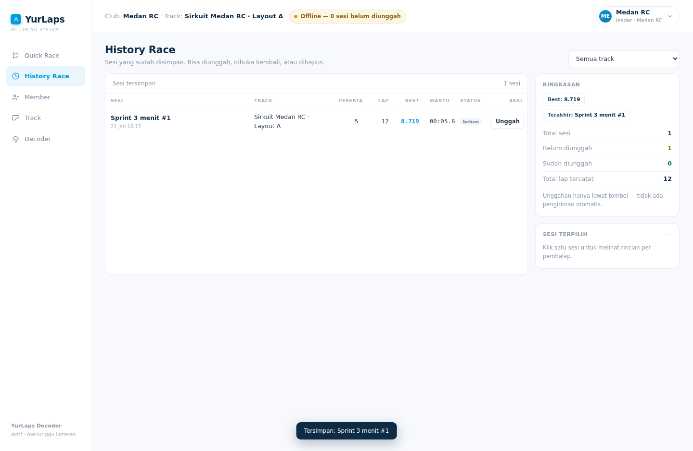
08History Race
Sesi tersimpan dengan filter per track, status unggah, dan ringkasan di kolom kanan.
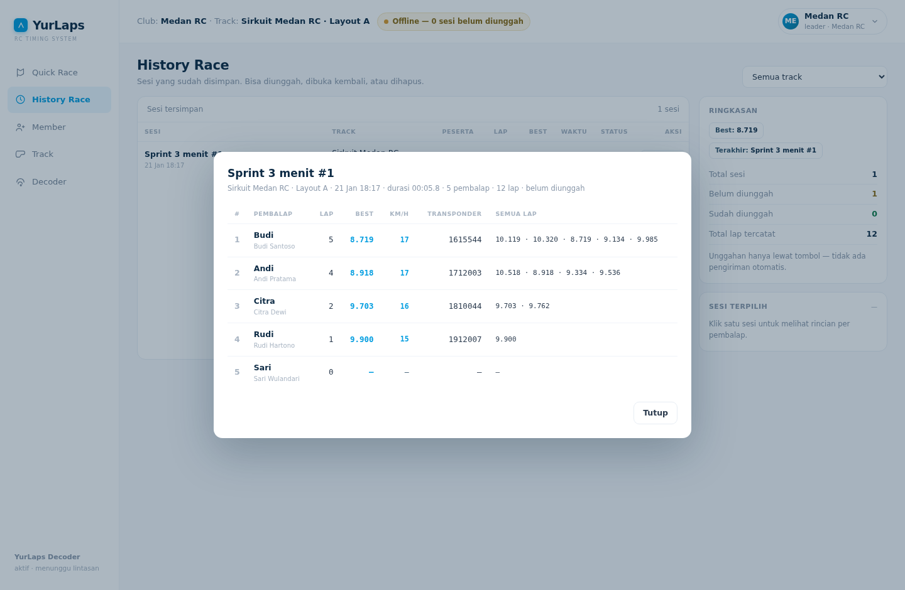
09Rincian sesi
Semua lap per pembalap, best lap, km/h, dan transponder yang dipakai.
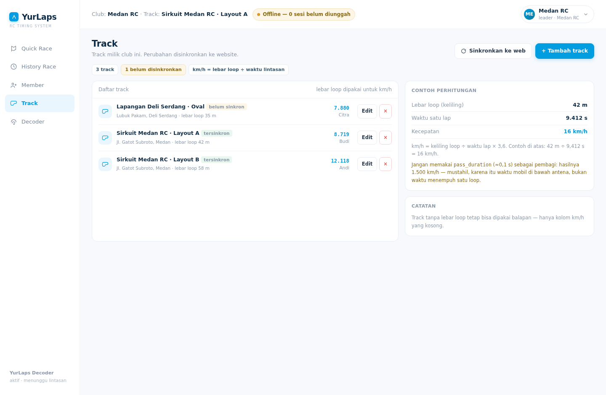
10Track
Satu club boleh punya banyak track. Rekor & jumlah sesi per track dihitung dari database.
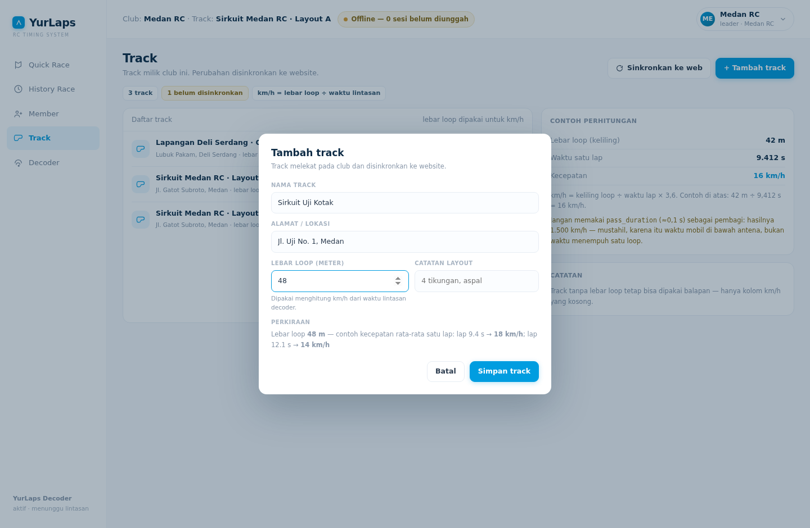
11Tambah track
Nama, alamat, lebar loop — dengan contoh perhitungan km/h langsung saat lebar diisi.
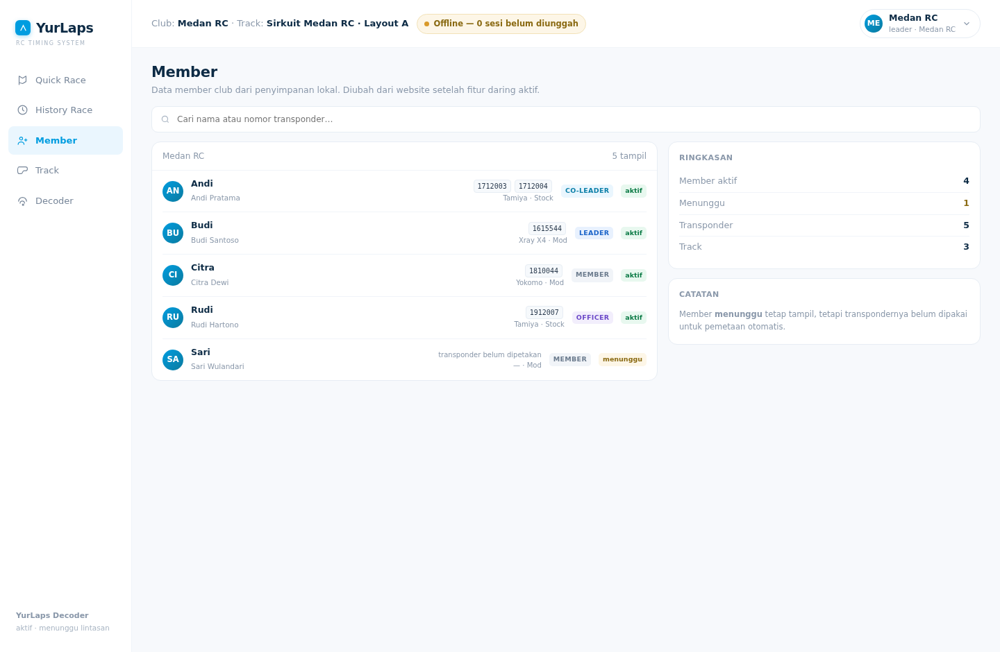
12Member
Peran (leader/co-leader/officer/member), status, transponder, mobil & kelas.
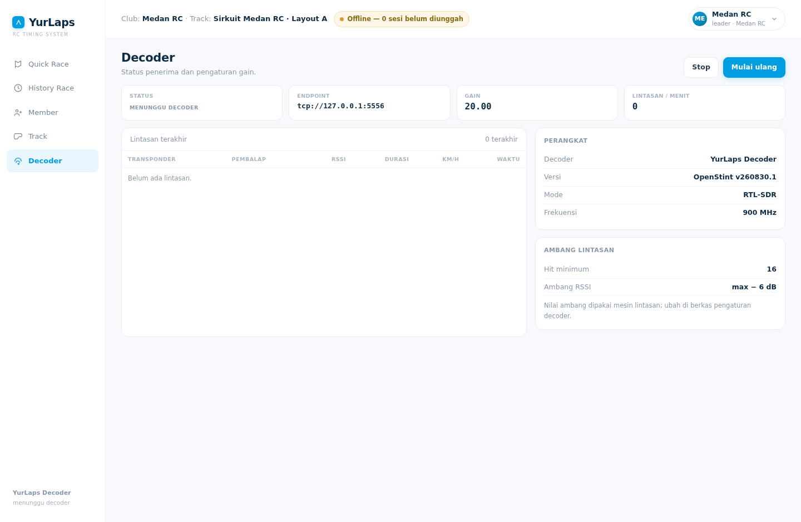
13Decoder
Endpoint, gain, dan status dibaca dari mesin sungguhan — di sini jujur tertulis “menunggu decoder”.